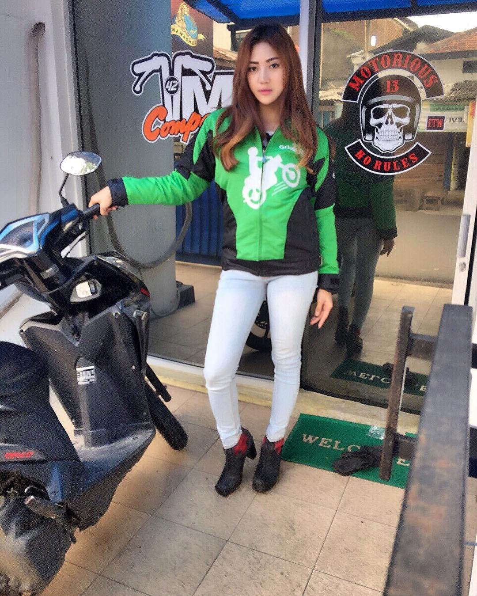
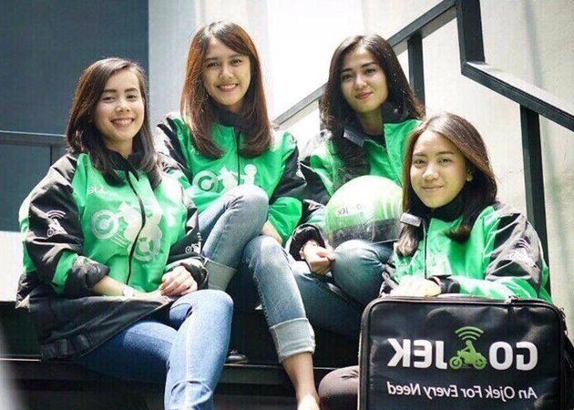

Siapa sih yang belum tahu Gojek?
| oleh Fansyah Fathurahman |
Hari ini aku mau membahas sedikit tentang Gojek, siapa sih yang belum tahu Gojek?
Menurut id.wikipedia.org GO-JEK merupakan sebuah perusahaan transportasi asal Indonesia yang melayani angkutan melalui jasa ojek. Perusahaan ini didirikan pada tahun 2010 di Jakarta oleh Nadiem Makarim.Layanan GO-JEK tersedia di wilayah Jabodetabek, Bali, Bandung, Surabaya, Makassar, Medan, Palembang, Semarang, Yogyakarta, dan Balikpapan. Hingga bulan Januari 2016, aplikasi GO-JEK sudah diunduh sebanyak hampir 10 juta kali di Google Play pada sistem operasi Android. Saat ini juga ada untuk iOS, di App Store.
Banyak orang sekarang memilih Gojek daripada pangkalan selain aman juga nyaman pastinya harganya lebih murah.
berbagai alasan dari masyarakat mengenai kenapa lebih memilih Gojek. Berikut Alasannya
 |
Pertama Drivernya Gojeknya cantik-cantik :) |
Kedua NGANGENIN.. gimana ga kangen coba lihat aja driver gojeknya kaya gini.. lol |
|
Untuk Para Jomblo tunggu apalagi ayoo naik Gojek setiap hari kali aja dapet Driver Gojek kaya gini nih hahaha..

Dengan lahirnya Gojek ini sendiri mampu meningkatkan ekonomi masyarakat menengah kebawah, menjadi lebih sejahtera,.oleh karena itu semoga akan lahir dan tumbuh aplikasi-aplikasi yang mampu mendorong ekonomi masyarakat untuk kedepannya..